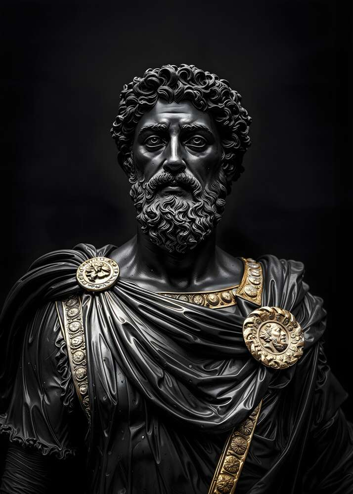
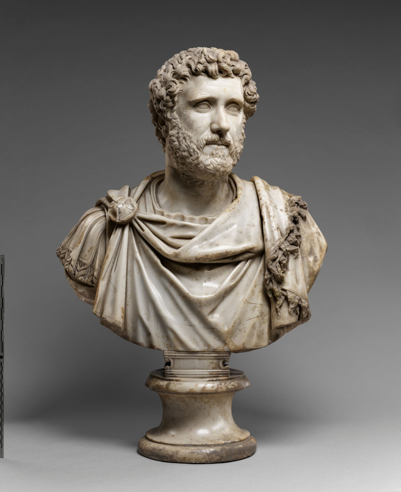
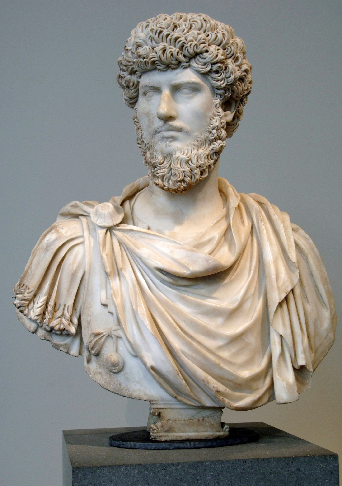

Не витрачай життя на суперечки про те,
яким має бути хороша людина. Стань такою.
Марк Аврелій.
 Марк Аврелій Антонін — римський імператор, один із найвизначніших представників стоїцизму, відомий як "філософ на троні". Народився 26 квітня 121 року в Римі в заможній і впливовій родині. Марк Аврелій народився в аристократичній родині в Римі в 121 році нашої ери. За народження мав ім'я Маркус Аніус Катіліус Северус (лат. Marcus Annius Catilius Severus). Отримав прекрасну освіту. З волі діда по матері він навчався вдома. Марк згадує про Діогнета, який уводив його в філософію й одночасно навчав живопису. Незважаючи на свій юний вік, був намічений у квестори, а через пів року після смерті Адріана, у 138 році, вступив на посаду квестора, тобто почав практично займатися адміністративною діяльністю. У тому ж році він був заручений з Фаустіною, дочкою імператора Антоніна Пія, наступника Адріана на престолі. Антоній Пій усиновив Марка Аврелія та Луція Вера, які стали співправителями Римської імперії після смерті імператора. Навесні 145 року Марк одружився з кузиною Фаустіною. Для римлян цей шлюб був великим святом, для молодих людей — втратою невинності, для імперської політики — новим етапом. Марк Аврелій навчався риториці у Фронтона і Герода Аттіка і від 146 року почав проявляти інтерес до філософії, якої його навчали Квінт Юній Рустік, Цинна Катул та інші викладачі. Вона була тоді свого роду релігійним сповіданням, яке вимагало умертвіння плоті і дотримання майже монастирських правил. У 12 років Марк одягнувся у філософську мантію, привчився спати на твердому і виконувати всі суворі вимоги аскетизму стоїків Антонін Пій помер 7 березня 161 року у своєму Лоріумському палаці, з усім спокоєм вищої мудрості. Відчувши наближення смерті, він упорядкував сімейні справи як проста людина, і наказав перенести в кімнату свого прийманого сина, Марка Аврелія, золоту статую Фортуни, яка завжди повинна була перебувати в покоях імператора

Антонін Пій

Луцій Вер
На початку правління Марк керував імперією зі співправителем, Луцієм Вером, який був його зведеним братом. Батьком Луція Вера був Луцій Елій, першообраний наступник Адріана. Статусу зведеного брата Луція Маркус набув після всиновлення Антоніном Пієм. Після смерті Луція Вера у 169 році нашої ери Маркус залишився єдиним правителем імперії. Період правління Марка Аврелія відзначився запеклими оборонними битвами, що знаменували кінець відносно спокійного розвитку епохи принципату. У 162 році було придушене повстання в Британії і йшли бої з хаттами в районі німецького лімесу. Після війни з парфянами (162—166 рр.) Вірменія і Едеське царство опинилися в залежності від Римської держави. Спроба узурпації верховної влади з боку намісника Сирії Гая Авіди Касія в 175 році і повстання в Єгипті знову загострили внутрішньополітичну ситуацію. У 176 році Марк знову обрав собі співправителя. Цього разу ним став його син — Коммод.
Стоїцизм — це філософська школа, заснована в Стародавній Греції близько 300 р. до н.е. філософом Зеноном із Кітія. Вона вчить, як досягти внутрішнього спокою і щастя, незважаючи на зовнішні обставини.
Він був усиновлений імператором Антоніном Пієм. Після смерті Антоніна він спочатку правив разом з Луцієм Вером, що було першим випадком подвійного правління в історії Риму. Після смерті Луція у 169 році Марк Аврелій став єдиновладним імператором.
Марк Аврелій помер 17 березня 180 року під час військової кампанії на півночі імперії, ймовірно від чуми Антоніна. Його смерть стала кінцем епохи п’яти добрих імператорів і початком менш стабільного періоду в історії Риму. Для стоїцизму його смерть означала завершення практичного етапу — він був останнім великим мислителем-стоїком, який поєднував філософію з реальною владою. Після нього стоїцизм став більше особистою моральною практикою, а не державницькою ідеологією. Його книга "Наодинці з собою" залишилася головним джерелом стоїчної мудрості, а сам Марк Аврелій став символом того, як можна жити чесно, мудро й спокійно навіть у найважчі часи.